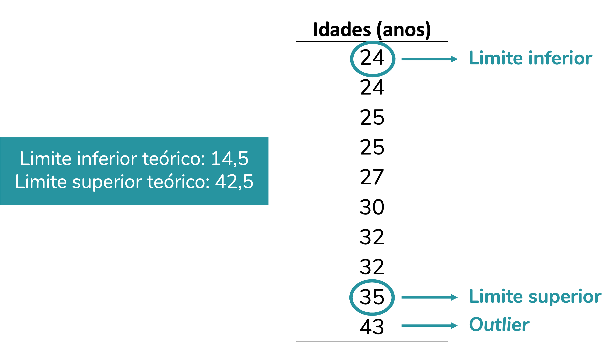
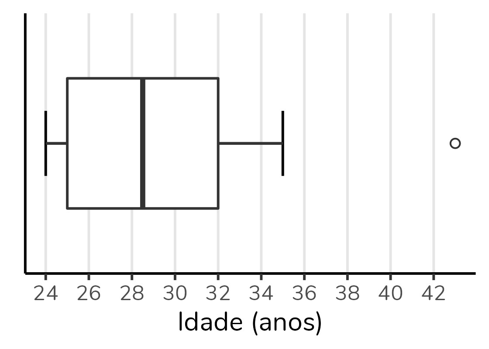
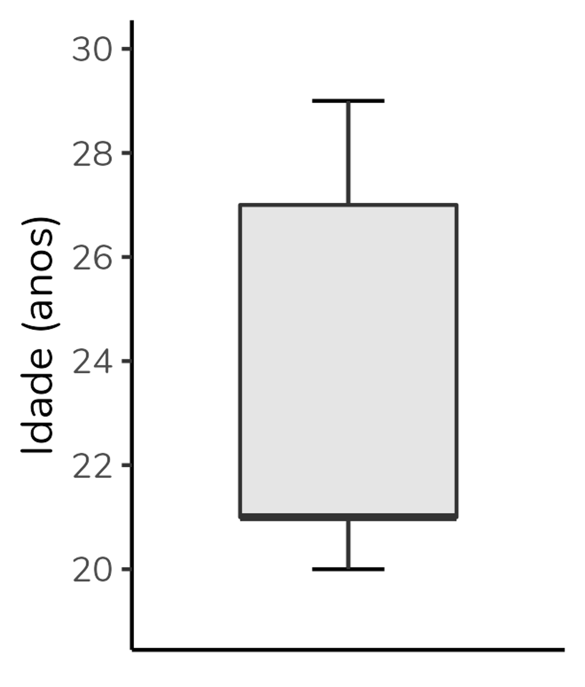
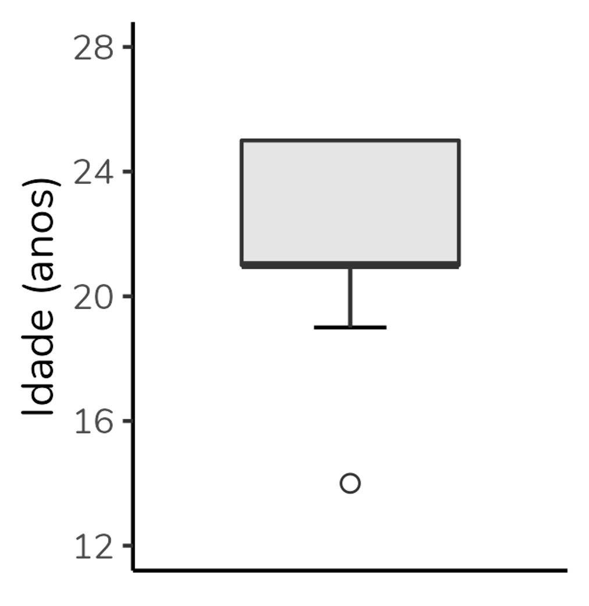
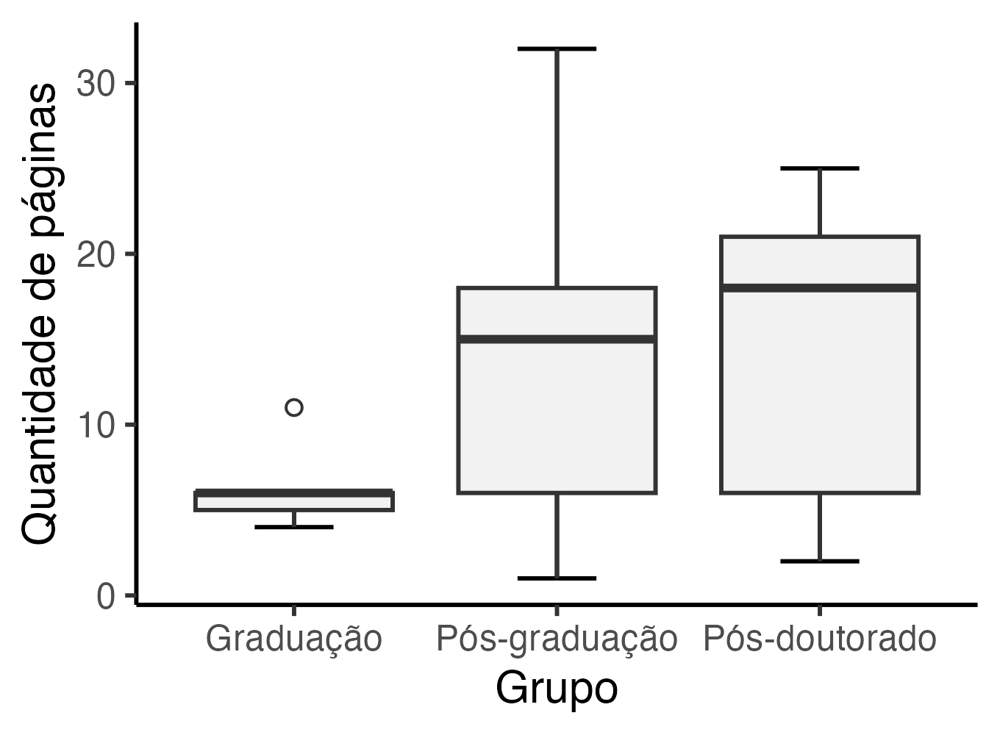

Se você está na área de análise de dados ou na área acadêmica, é provável que você já tenha visto um gráfico com aparência um tanto peculiar, como o acima, inspirado no artigo de Schenk & Steppan (2014).
Trata-se de um gráfico cujo nome em português é “diagrama de caixas,” mas que é muito mais conhecido pelo seu nome em inglês: boxplot.
Ok, mas como interpretá-lo? O boxplot é composto por seis elementos: limite inferior, quartil 1, mediana (= quartil 2), quartil 3, limite superior e outliers. Portanto, para interpretá-lo antes precisamos entender cada um desses elementos.
 Elementos que compõem um boxplot.
Elementos que compõem um boxplot.
Os limites superior e inferior
Além dos quartis, um boxplot é composto pelos limites superior e inferior. Esses limites correspondem, respectivamente, ao maior e menor valor do conjunto de dados que não sejam outliers. Um outlier é um valor que destoa do conjunto de dados, o que podemos chamar em português de “valor discrepante” - mas aqui, de novo, o termo em inglês é mais conhecido e usado.
E como definir se um valor é outlier? Para isso, precisamos calcular os limites superior e inferior teóricos. Esses limites são definidos com base na amplitude interquartil (AIQ). Da seguinte forma:
Limite inferior teórico = \(Q1 - 1,5 \times AIQ\)
Limite superior teórico = \(Q3 + 1,5 \times AIQ\)
Na verdade, esse 1,5 pode variar. Mas, 1,5 é o valor padrão para o cálculo desses limites. Ao usarmos o valor de 1,5 estamos criando o boxplot de Tukey (que é o que sai por padrão nos softwares). Cerca de 0.7% dos valores serão considerados outliers se usarmos esse critério - se quiser se aprofundar, há uma discussão nesse link.
Bom, para isso fazer mais sentido, vamos calcular os limites para os nossos dados:
Limite inferior teórico = \(Q1 - 1,5 \times AIQ\)
Limite inferior teórico = \(25 - 1,5 \times 7\)
Limite inferior teórico = \(25 - 10,5\)
Limite inferior teórico = \(14,5\)
Limite superior teórico = \(Q3 + 1,5 \times AIQ\)
Limite superior teórico = \(32 + 1,5 \times 7\)
Limite superior teórico = \(32 + 10,5\)
Limite superior teórico = \(42,5\)
Agora o que faremos será comparar os nossos limites teóricos com os nossos dados.
Observe que não há no nosso banco valores abaixo do nosso limite inferior teórico. Logo, nosso limite inferior verdadeiro - que irá para o gráfico - será o menor valor do banco, o 24.
Por outro lado, há um valor que está acima do limite superior teórico, o valor 43. Esse valor será considerado um outlier. O limite inferior verdadeiro, que será plotado no gráfico, será, portanto, o maior valor do banco exceto o outlier. No caso, o valor 35. O 43, por ser um outlier será representado por um círculo (em geral, aberto) na altura do eixo y (vertical) correspondente ao 43.

Veja como o gráfico traz exatamente essas informações:
Boxplots na horizontal
É possível (e até comum em algumas áreas) representar boxplots na horizontal, ou seja, com a variável de grupo no eixo y (vertical) e a variável numérica no eixo x (horizontal).
A interpretação será a mesma. Veja abaixo o mesmo boxplot que construímos, mas na horizontal:

Eu confesso que sou tradicional e tendo a preferir os boxplots na vertical, mas é uma questão de estilo. Sinta-se livre para usar como preferir.
E os boxplots esquisitinhos?
Quando eu fiz um conteúdo no Instagram explicando a construção e interpretação de boxplots, a pergunta que eu mais recebi foi: “tá, mas e aqueles boxplots com pedaços faltando?”.
As pessoas se referiam a boxplots como o do grupo “Graduação” no gráfico abaixo, mostrado no início do post:
Mas, não há muito segredo. Todos os elementos que vimos - limite inferior, Q1, Q2, Q3, limite inferior - sempre estarão no boxplot. Se você não está enxergando um deles, é porque seu valor coincide com outro, e haverá sobreposição no gráfico.
No caso do grupo “Graduação”, a mediana está sobreposta ao Q3 e ao limite superior - ou seja, para esse grupo a mediana, o Q3 e o limite superior são valores idênticos. É por isso que não estamos vendo o T se projetando para além do topo da caixa e é também por isso que o topo da caixa está representado por uma linha mais grossa que a base da caixa (indicando que a mediana está lá).
Vejamos mais alguns exemplos.
No gráfico abaixo, a mediana se sobrepõe ao Q1 (note que a base da caixa está representada por uma linha mais grossa):

Já nesse gráfico, a mediana se sobrepõe ao Q1 (a base da caixa está representada por uma linha mais grossa) e o limite superior está sobreposto ao Q3 (não há o clássico T se projetando paa além do limite superior):

Quando usar um gráfico boxplot?
Em quais situações faz sentido usar um gráfico boxplot?
Trata-se de um gráfico usado quando queremos representar a distribuição de uma variável numérica ou, pelo menos, ordinal. No caso, representamos a distribuição da variável idade na nossa amostra.
Além da variável numérica/ ordinal, podemos incluir uma variável de grupo, como o boxplot do começo do post. Esse boxplot que mostra a distribuição da quantidade de páginas de artigos selecionados por alunos divididos em três grupos: graduação, pós-graduação e pós-doutorado. Basta uma rápida olhada para percebermos que a mediana de páginas do grupo “Graduação” é inferior às medianas dos demais grupos. Podemos também observar que o grupo com maior variação absoluta (ou seja, maior diferença entre o maior e menor valor) é o grupo “Pós-graduação”. Já o grupo “Pós-doutorado” apresenta a maior amplitude interquartil (ou seja, a caixa mais alta). Poderíamos também usar o boxplot para avaliar a simetria da distribuição, mas essa discussão fica para outro post.
Gráfico boxplot, inspirado no gráfico do artigo de Schenk & Steppan (2014).
Além disso, perceba que o boxplot não é baseado em média nem em medidas de dispersão derivadas da média (como desvio-padrão e variância). Portanto, é um gráfico excelente para distribuições que não são bem representadas pela média, sendo ótimo para distribuições não-normais.
Mas, claro, não é um gráfico para todas as audiências. Veja quantos parágrafos eu gastei para explicá-lo nesse texto. O boxplot é excelente para uso pelo time de dados, para publicações acadêmicas, mas em geral péssimo para contextos como divulgação científica e matérias jornalísticas.
Como fazer um boxplot?
Nas suas últimas versões, o Excel implementou o boxplot. Nesse vídeo eu explico como fazê-lo.
Se você for um amante do R (como eu), minha sugestão é montar o boxplot pelo pacote ggplot2. Eu tenho um vídeo bem detalhado sobre boxplot no ggplot2.
Se ggplot2 é algo que te angustia (socorro, por que tantas linhas para gerar um único gráfico?), eu tenho uma playlist com vários vídeos ensinando a construir gráficos no ggplot2 do zero. Efeitos colaterais de aprender a mexer no ggplot2: amor incondicional e não querer fazer sequer um gráfico de barras em outro software, haha!
Mas, vou deixar um código simples, para você usar como base. Partindo de um data frame chamado dados contendo os grupos em uma coluna e a quantidade de páginas em outra, temos:
ggplot(dados, aes(x = Grupo, y = Páginas)) +
geom_errorbar(stat = "boxplot", width = 0.3) +
geom_boxplot(outlier.shape = 1, fill = "grey95") +
labs(y = "Quantidade de páginas") +
theme_classic()

Referências:
Hyndman, R. J., & Fan, Y. (1996). Sample quantiles in statistical packages. The American Statistician, 50(4), 361–365.
Schenk, J. J., & Steppan, S. J. (2014). Too long to read: Assessing the motivation behind graduate student attendance in reading groups. Journal of College Science Teaching, 44(2), 40–45.